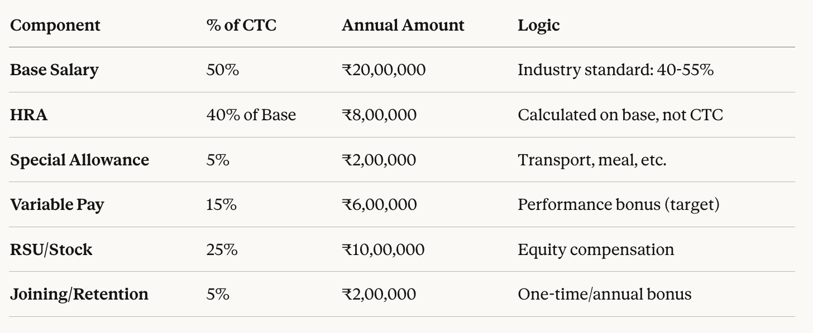
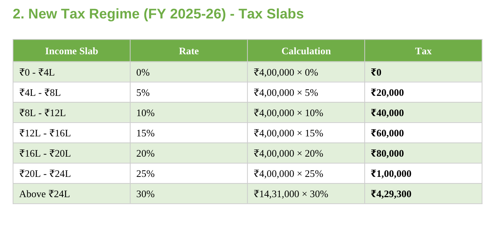
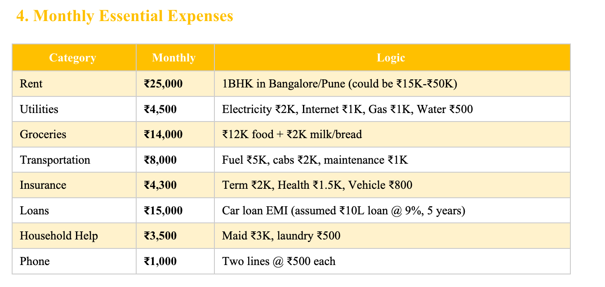
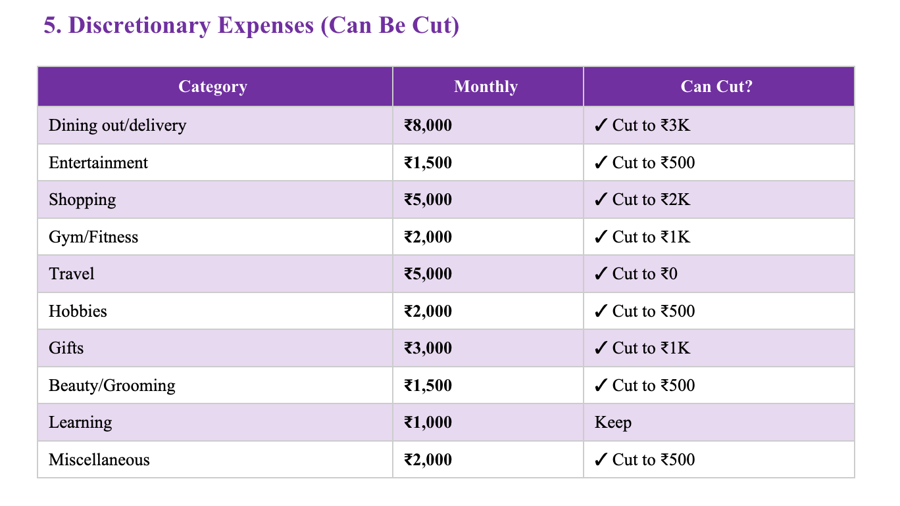
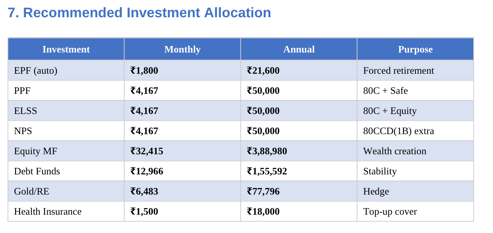

Breaking down every calculation in our L4/L5 financial planning tool - specifically for tech employees working in India
Disclaimer (Please Read)
This article and spreadsheet are for educational purposes only. They do not constitute personalized financial, tax, legal, or investment advice.
I am not a certified financial planner, tax advisor, chartered accountant, investment advisor, or legal professional. The content is based on general principles, public information, and personal research.
Tax laws, rules, and regulations (including FY 2025–26 assumptions) change frequently. Calculations are simplified and may not reflect your exact situation. Always verify current rules and consult qualified professionals before acting.
All investments involve risk. No outcomes are guaranteed. Examples and assumptions used (income, expenses, family setup, etc.) may not apply to you and must be adjusted to reflect your reality.
This tool assumes resident Indian tax status. If you have foreign income, assets, or complex residency issues, seek specialized advice.
By using this content, you acknowledge that:
You use it at your own risk
You will seek professional guidance before major decisions
No advisory or fiduciary relationship is created
The author assumes no liability for any outcomes
Financial planning is not a one-time ritual—it needs regular review and professional validation.
Download the spreadsheet, make it yours, and share your learnings.
Let's normalize talking about financial preparedness in the AI age.
Because the wave is coming. The only question is whether you'll be ready.
WHEN IN DOUBT, CONSULT A QUALIFIED PROFESSIONAL. Your financial future is too important to leave to a spreadsheet alone.
⚠️ How to Read This Article
This is a 10,000+ word technical breakdown. Here's how to use it:
If you're skimming (5 minutes):
Read only the sections relevant to YOUR situation
Check the assumptions against your reality
Ignore calculations that don't apply to you
If you're implementing (30 minutes):
Read sections matching your CTC/situation
Download the spreadsheet
Replace ALL sample numbers with your actual data
If you're critiquing (full read):
Every number here is based on specific assumptions
All conclusions are conditional ("if X, then Y")
This is a framework, not financial advice
Adjust inputs → outputs change dramatically
Critical reminder: This article explains methodology, not prescribes outcomes. Your mileage WILL vary.
Who This Is For (And Who It's Not)
This article and spreadsheet are specifically designed for:
Tech professionals (L4/L5 level) working and living in India - whether you're in Bangalore, Pune, Hyderabad, Gurgaon, or any other Indian city. You're paying taxes to the Indian government, dealing with EPF/PPF/NPS, navigating Indian tax regimes (Old vs New), supporting family back in your hometown, and worried about AI automation affecting your career in the Indian tech ecosystem.
This is NOT for:
Indian immigrants working in the US (H1B, Green Card holders, US citizens) - that's a different article with completely different tax calculations, retirement accounts (401k, Roth IRA), and immigration considerations
Employees working remotely for foreign companies while in India (tax complexity requires professional advice)
Business owners or entrepreneurs (different financial planning needs)
Freelancers with highly variable income (though principles can be adapted)
If you're an Indian employee working for Indian or multinational companies in India, earning your salary in INR, and planning your future in India - this framework may be useful to you.
Why This Article Exists
Here is a comprehensive financial planning spreadsheet for Indian tech employees (L4/L5 level) preparing for AI disruption. Within hours, people asked:
"Why did you assume ₹40 lakhs CTC?"
"How did you calculate income tax with the new FY 2025-26 rules?"
"What's the logic behind a 12-month emergency fund?"
"Why these specific investments - EPF, PPF, NPS, ELSS?"
Fair questions.
So here's the complete breakdown of every assumption, every formula, and every calculation in that spreadsheet. Not because I want you to accept my numbers blindly - but because I want you to understand the methodology so you can plug in YOUR numbers.
This is built for the Indian context:
Indian Tax Year (FY 2025-26)
Indian retirement accounts (EPF, PPF, NPS)
Indian tax deductions (80C, 80CCD, 80D, HRA exemption)
Indian family obligations (supporting parents in hometown)
Indian living costs (rent in Indian metros, household help, etc.)
Indian financial instruments (ELSS, PPF, FDs, LIC)
Think of this as the "show your work" section of a math exam. Except the stakes are your financial survival in the AI era while navigating the Indian financial system.
The Foundation: Understanding CTC vs Take-Home
Assumption 1: ₹40 Lakh CTC for L4/L5 Employee
Why ₹40 lakhs?
Based on 2024-2025 market data for mid-level engineers (L4/L5) in Indian tech hubs:
L4 (Senior Engineer): ₹25-35 lakhs CTC
L5 (Staff Engineer/Lead): ₹35-50 lakhs CTC
Sweet spot: ₹40 lakhs = upper L4 or lower L5
Your reality might differ:
Bangalore/Pune/Hyderabad pay more than Tier-2 cities
FAANG/unicorn startups pay more than service companies
Domain matters: ML/AI engineers earn 20-30% more
How to adjust: In Sheet 1, Cell B5, change ₹4000000 to YOUR actual CTC. Everything else recalculates automatically.
CTC Component Breakdown: The 50-15-25-10 Rule
Here's how I split ₹40 lakh CTC:
Why this split?
50% Base is conservative. Some companies do 60% base, others 40%. Why 50%?
Allows higher employer EPF contribution (capped at 12% of ₹15K/month = ₹21,600/year max)
Balances fixed vs variable compensation
Industry average for tech companies
15% Variable assumes you'll actually get it. Reality check:
Most companies set "target" variable at 15-20%
Actual payout: 0-150% of target based on performance
I assumed 80% payout = ₹4.8L instead of ₹6L
Conservative but realistic
25% RSU is standard for product companies. But here's the catch:
Vests over 4 years typically (25% per year)
Taxed as income when it vests
I calculated only 25% vesting annually = ₹2.5L/year in taxable income
If your RSUs vest monthly, spread it evenly
Your company might differ:
Service companies: Higher base (60-70%), lower/no RSU
Startups: Lower base (40%), higher equity (30-40%)
FAANG: Higher RSU (30-35%)
Adjust the percentages in Sheet 1 to match your offer letter.The Tax Maze: FY 2025-26 New Rules
The Tax Maze: FY 2025-26 New Rules
Why Tax Calculation Gets Complicated
Gross Income ≠ Taxable Income
From ₹40L CTC, here's what actually becomes taxable:
Wait, where did ₹70,000 go?
Variable: Only 80% paid out (₹4.8L instead of ₹6L)
RSU: Only 25% vests this year (₹2.5L instead of ₹10L)
New Tax Regime (FY 2025-26): The Default Choice
Step 1: Calculate Taxable Income
Why ₹75,000 standard deduction?
Increased from ₹50,000 in FY 2024-25
Automatic - no proof needed
Available to EVERYONE in new regime
Why EPF capped at ₹21,600?
Employee contributes 12% of Basic
But only on ₹15,000/month max (₹1,800/month × 12 = ₹21,600/year)
Even if your basic is ₹1.67L/month, EPF contribution maxes out
Step 2: Apply Tax Slabs (New Regime FY 2025-26)
Effective Tax Rate: ~19-20% (₹7.58L on ₹39.3L gross income)
Old Tax Regime: When It Makes Sense
Only if you have LOTS of deductions:
HRA Exemption Calculation (Most confusing part):
HRA exemption = LEAST of three values:
a) Actual HRA received: ₹8,00,000
b) 50% of Basic (if metro) or 40%:
Basic = ₹20L
Metro (Bangalore/Mumbai/Delhi/Kolkata) = 50% = ₹10L
Non-metro = 40% = ₹8L
We assumed metro → ₹10L
c) Rent paid - 10% of Basic:
Assumed rent: ₹30,000/month = ₹3,60,000/year
10% of basic: ₹2,00,000
= ₹3,60,000 - ₹2,00,000 = ₹1,60,000
HRA Exemption = MIN(₹8L, ₹10L, ₹1.6L) = ₹1,60,000
Why so low? Because rent paid is only ₹3.6L but basic is ₹20L. The "rent - 10% basic" formula limits the exemption.
If you pay ₹50,000/month rent:
Rent = ₹6,00,000
Rent - 10% basic = ₹6L - ₹2L = ₹4L
HRA exemption jumps to ₹4L
This is why higher rent increases HRA exemption value.
Old Regime Tax Calculation:

Comparison:
New Regime: ₹7,58,470
Old Regime: ₹8,33,040
New Regime saves ₹74,570
When Old Regime wins:
Home loan interest > ₹3L
Parents' health insurance (senior citizen - ₹50K deduction)
Very high 80C investments already locked in
For most L4/L5 employees renting: New Regime is better.
Monthly Take-Home: The Real Number
Sanity check for this example:
Started with ₹40L CTC
Taking home ₹30.5L
Lost ~24% to tax and deductions
From ₹40L CTC in this model:
~77% becomes take-home
~19% goes to income tax
~1% statutory deductions
Remaining ~3% was variable/RSU not paid/vested
Expenses: The 50/30/20 Framework (Indian Edition)
Essential Expenses: ₹80,000-₹1,00,000/month
I assumed single employee, renting, no kids:
If you have kids, add:
School fees: ₹10K-₹50K/month
Daycare: ₹15K-₹30K/month
This could push essentials to ₹1.2L-₹1.5L
If you own a home:
Remove rent (₹25K)
Add home loan EMI (₹40K-₹80K typical for ₹50L-₹1Cr loan)
Net: Essentials increase by ₹15K-₹55K
Discretionary Expenses: ₹31,000/month
Family Support: ₹18,000/month

Reality for many immigrants:
Sending ₹10K-₹30K/month to parents
Medical emergencies: ₹50K-₹2L unpredictable hits
Siblings' education: Additional ₹10K-₹20K
Total Monthly Expenses:
Essential: ₹75,300
Discretionary: ₹31,000
Family: ₹18,000
Total: ₹1,24,300/month
Monthly surplus: ₹2,53,961 - ₹1,24,300 = ₹1,29,661
Savings rate: 51% (Very high - most people are 20-30%)
Emergency Fund: The 12-Month Rule
Why 12 Months, Not 6?
Traditional advice: 6 months of expenses
AI disruption reality:
Job search for 40+ candidates: 6-9 months average
Career pivot/retraining: 6-12 months
Age discrimination: Adds 3-6 months to job search
Industry switching: 12+ months often needed
The math:
Assume current emergency fund: ₹3,00,000
Covers: 3.6 months
Gap to 12 months: ₹6,93,960
Monthly contribution needed: ₹57,830 (to reach in 12 months)
This is Priority #1 until you hit ₹10L emergency fund.
Investment Allocation: The AI-Era Portfolio
After Emergency Fund Is Built
Monthly investable surplus: ₹1,29,661
Why These Percentages?
80C maxed at ₹1.5L:
EPF: ₹21,600 (automatic)
PPF: ₹50,000 (safe, tax-free returns ~7%)
ELSS: ₹50,000 (equity exposure + tax benefit)
Remaining ₹28,400: Life insurance premium or PPF
NPS ₹50K:
Additional deduction under 80CCD(1B)
Saves ₹15,600 in taxes (if 31.2% bracket)
Lock-in until 60, but worth it for tax saving
Equity 25% of surplus:
High growth potential (12-15% historically)
Long-term wealth creation
Ride out volatility
Debt 10% of surplus:
Stability when equity crashes
Liquid for emergencies beyond emergency fund
6-8% returns
Gold/RE 5%:
Hedge against inflation
Diversification
Can be digital gold (more liquid)
Net Worth: The Tracking Metric
What to Include
Assets in this example:
Liquid (₹7,50,000):
Savings account: ₹1,00,000
Emergency fund: ₹3,00,000
FDs: ₹2,00,000
Liquid MF: ₹1,50,000
Investments (₹20,00,000):
EPF: ₹5,00,000 (accumulated)
PPF: ₹3,00,000
NPS: ₹2,00,000
Equity MF: ₹4,00,000
ELSS: ₹1,50,000
Stocks: ₹2,00,000
Debt MF: ₹1,00,000
Gold: ₹1,50,000
Physical (₹10,00,000):
Vehicle: ₹8,00,000
Gold jewelry: ₹2,00,000
Total Assets: ₹37,50,000
Liabilities:
Car loan: ₹6,00,000
Net Worth: ₹31,50,000
Is This Good?
Rule of thumb: Net worth should be (Age / 10) × Annual Income
Example:
Age: 35
Income: ₹30.5L take-home
Target: 3.5 × ₹30.5L = ₹1.07 Cr
Current: ₹31.5L Progress: 29% of target
This is actually pretty good for someone in their early-mid 30s.
By age 40:
Target: 4.0 × ₹30.5L = ₹1.22 Cr
Projected (with ₹70K/month investment @ 12% return): ₹95L
Still need to increase savings/returns
AI Disruption Scenarios: The Stress Tests
Scenario 1: Complete Job Loss
Assumptions:
Zero income immediately
Severance: 3 months (optimistic case)
New job search: 6-9 months (typical range)
Survival math in this model:
With aggressive expense cuts (70% discretionary reduction):
Under these assumptions, this profile could potentially survive 12-17 months depending on expense discipline.
This scenario depends on:
Finding employment within 12 months
Actually cutting discretionary spending
No major medical emergencies
Ability to pause family support temporarily
Scenario 2: 30% Salary Cut
New income: ₹2,53,961 × 0.70 = ₹1,77,772/month
Current expenses: ₹1,24,300/month
Analysis: ₹1,77,772 - ₹1,24,300 = ₹53,472 surplus remains
In this scenario, because the baseline savings rate was ~51%, even with a 30% income reduction, essential expenses are still covered with room for some savings.
However:
Cutting all discretionary (₹31K) provides additional buffer
Reducing family support by 30% (save ₹5.4K) if necessary
Total potential adjustment capacity: ₹36.4K
Under this model, a 30% salary reduction appears manageable with lifestyle adjustments.
Scenario 3: Freelance Transition
Target: 60% of salary = ₹1,52,377/month
Reality spectrum:
Optimistic: 80% of target = ₹1,21,901
Realistic: 60% = ₹91,426
Pessimistic: 40% = ₹60,951
Can this profile survive?
Essential expenses: ₹75,300
Optimistic: ✓ Surplus ₹46.6K
Realistic: ✓ Surplus ₹16.1K
Pessimistic: ❌ Shortfall ₹14.3K
Buffer needed: 3 months of zero income = ₹82,830 × 3 = ₹2,48,490
Current emergency fund: ₹3,00,000 ✓ Meets 3-month threshold
But: Freelancing often has dry periods. A 6-month buffer minimum = ₹4.97L would be more prudent.
Gap: ₹1.97L
The Risk Score: A Subjective Self-Assessment Framework
⚠️ Important Disclaimer About This Section
This "risk score" is a subjective self-assessment index, NOT a scientific measurement.
Unlike a credit score backed by empirical default data, this framework uses:
Subjectively chosen factors
Arbitrary weights (based on judgment, not data)
Self-reported scoring (vulnerable to bias)
It's a heuristic tool for structured thinking, not an analytical prediction.
Think of it like a fitness self-assessment - useful for identifying areas to work on, but not a medical diagnosis.
Use it to:
Identify weak spots in your preparation
Track improvement over time
Structure conversations about readiness
Don't use it to:
Make yes/no career decisions
Compare yourself to others
Predict actual outcomes
The Risk Score: Measuring Preparedness

Why?
Emergency fund only 6 months (need 12)
Limited skill diversification
No established side income
Not fully ready for career pivot
How to Improve Your Score
From 4.8 → 7.5 in 12 months:
1. Emergency Fund (6 → 10):
Save ₹6L more (₹50K/month)
Weight: 25%
Impact: +1.0
2. Skill Diversification (5 → 8):
Learn 2 adjacent skills (product management, system design)
Weight: 20%
Impact: +0.6
3. Side Income (3 → 7):
Start consulting (₹20K-₹50K/month)
Weight: 15%
Impact: +0.6
New Score: 4.8 + 1.0 + 0.6 + 0.6 = 7.0 → 🟡 Moderate Prep
The Formulas That Matter
Key Excel Formulas Used
1. HRA Exemption:
excel
2. New Regime Tax:
excel
3. Emergency Fund Months:
excel
4. SIP Required for Goal:
excel
5. Runway Calculation:
excel
What I Deliberately Left Out
Things NOT in the spreadsheet:
Crypto - Too volatile for systematic planning
Real estate as primary investment - Most L4/L5 profiles can't afford yet
International investing - LRS limits and complexity
Options trading - Not suitable for core financial planning
Business income - Too variable to model reliably
Inheritance - Cannot plan for unknowns
Why?
Because this tool is designed for methodical financial planning for salaried employees preparing for potential disruption.
Not speculative strategies. Not get-rich-quick approaches. Systematic, calculable, adjustable planning.
Common Questions & Adjustments
"My CTC is ₹25 lakhs, not ₹40 lakhs"
In Sheet 1, change B5 to 2500000
Everything recalculates proportionally:
Tax drops to ~₹3.2L (new regime)
Take-home: ~₹1.65L/month
Emergency fund target: ₹5-6L (instead of ₹10L)
Investable surplus reduces proportionally
The methodology remains the same, outputs scale to your input.
"I have kids and a home loan"
Adjust:
Essential expenses: Add ₹30K-₹80K (kids + EMI)
Discretionary: May need to reduce by ₹10K
Old regime might become more favorable (home loan interest deduction)
In Sheet 2:
Update Section 24(b) with actual home loan interest
Recheck which regime is better for YOUR numbers
"I'm 45, not 35"
Risk factors change:
Job search typically takes 30-50% longer for 45+ candidates
Career pivot becomes more challenging
May need 15-18 month emergency fund (not 12)
Adjust:
Increase emergency fund target
Increase insurance coverage
More conservative investment allocation (40% debt vs 20%)
"I'm in Tier-2 city, expenses are lower"
Adjust downward:
Reduce rent by 40-50% (₹12K-₹15K vs ₹25K)
Reduce transportation by 30%
Essentials drop to ₹55K-₹60K
This proportionally increases your runway and savings capacity.
The Uncomfortable Reality
This spreadsheet may reveal things you'd prefer not to see:
Discretionary spending is higher than you thought
Emergency fund is insufficient
Retirement savings are behind target
That car EMI is stretching your budget
Family obligations may be unsustainable
You may be closer to financial stress than comfortable
That's the point.
Better to see reality clearly now than discover it during a crisis.
What Success Might Look Like
6 months from now, after using this framework:
Emergency fund: ₹6L+ (from ₹3L)
Investment rate: 40%+ of income
Discretionary spending: Cut by 30%
Side income: ₹15K-₹30K/month developing
Insurance: Adequate coverage in place
Tax optimization: Using optimal regime
Skill development: 1-2 new marketable skills in progress
Risk score: 7/10 (from 4.8/10)
You might still face job disruption from AI.
But you'll have 12+ months of runway to navigate it instead of 2 months of panic.
Final Thoughts
This isn't a perfect tool. Your life has nuances no spreadsheet can capture:
Aging parents' health deteriorates
Siblings need emergency support
You want to switch careers
Mental health requires a break
Divorce, medical crisis, accidents
But it's a starting point.
A framework to think systematically about financial resilience. Math you can adjust to YOUR reality.
The assumptions I made are educated estimates based on market data and experience.
Your job is to replace my assumptions with your reality.
Then, quarterly, update it. Track your progress. Adjust your targets.
Because when AI comes for jobs in your sector - and it might - you'll want to answer one question with confidence:
"How long can I navigate this transition?"
And right now, do you know the answer?